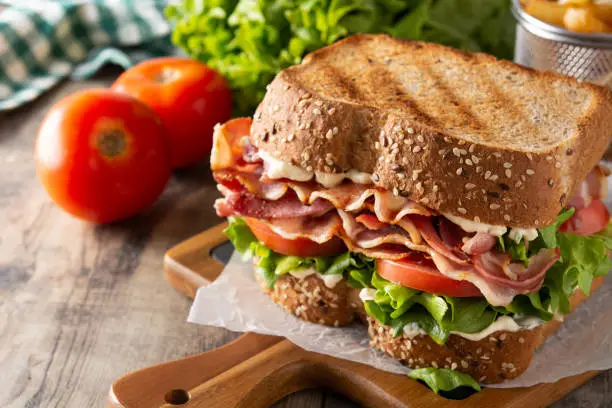

This is a delicious sandwich recipe that is perfect for any occasion. The combination of fresh ingredients and flavorful spreads makes it a satisfying meal. Serve it with a side of chips or a salad for a complete lunch or dinner!
Spread mayonnaise on one slice of bread and mustard on the other slice.
Layer the turkey slices on top of the mayonnaise-covered bread slice.
Place the cheddar cheese slices on top of the turkey.
Add the lettuce leaf and tomato slices on top of the cheese.
Season with salt and pepper to taste.
Place the second slice of bread on top to complete the sandwich.